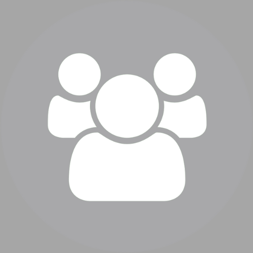

<ion-header class="ion-no-border">
  <ion-toolbar class="ion-padding-top">
    <ion-title  mode="md">Communities</ion-title>
    <ion-buttons slot="end" mode="md">
      <ion-button>
        <span class="material-symbols-outlined" >camera_alt</span>
      </ion-button>
      <ion-button>
        <span class="material-symbols-outlined" >more_vert</span>
      </ion-button>
    </ion-buttons>
  </ion-toolbar>
</ion-header>
<ion-content>
 <ion-item lines="none" class="ion-padding-vertical">
  <ion-thumbnail slot="start" style="position: relative;">
    
    <ion-badge color="primary" >+</ion-badge>
  </ion-thumbnail>
  <ion-label>
    <h2>New community</h2>
  </ion-label>
</ion-item>


</ion-content>
